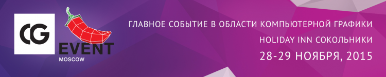

Главная
Главная
Случайное движение
Движение на бесконечном поле
Руководство пользователя
О авторе
Теория
Главные новости
28–29 ноября пройдёт тринадцатая конференция по компьютерной графике CG EVENT 2015
15.11.2015 [15:56],
Владимир Мироненко
C 28 по 29 ноября 2015 года в Москве пройдёт тринадцатая конференция по компьютерной графике CG EVENT 2015. Мероприятие традиционно отличается высокой насыщенностью. Более ста докладов, посвящённых самым разным направлениям компьютерной графики, круглые столы на горячие темы, секция для разработчиков, презентации российских и зарубежных художников, показ и обсуждение работ — все это входит в программу, рассчитанную на два дня.

Новая статья: Эволюция пикселя: малоизвестные факты об истории компьютерной графики
13.08.2015 [00:12],
3DNews Team
Те, кто занимается разработкой трехмерной графики, очень хорошо знают, что успех в освоении этой области зависит исключительно от терпения. «Наскоком» этой наукой овладеть невозможно, для этого нужна длительная подготовка. Используя метод проб и ошибок, прочитав массу учебной литературы, после многократного утомительного ожидания рендеринга финальной сцены наконец-то приходит озарение: «Так вот как оно, оказывается, нужно было делать!».
Словно спортсмен, оттачивающий свое мастерство на спортивном инвентаре, дизайнер компьютерной графики раз за разом применяет одни и те же шаблонные конструкции, которые помогают ему разобраться в тонкостях работы с программой. Привычные для него картинки и модели настолько давно используются для тестирования различных функций 3D-редактора, что кажутся вполне обычными инструментами. А между тем многие из них совсем не похожи на «стандартные» средства. Модель чайника, трехмерная голова обезьяны и прочие странные вещи — откуда они взялись?
Многие полагают, что присутствие в программах для разработки трехмерной графики таких необычных моделей как Suzanne или Teapot — это блестящая находка разработчиков. Действительно, в отличие от правильных простых объектов типа сферы, цилиндра, куба или конуса, модели с необычной геометрией смотрятся более естественно. Их более сложная форма позволяет быстро обнаружить недостатки освещения и материалов. С этими объектами очень удобно экспериментировать и упражняться в моделировании.
Читаете продолжение: